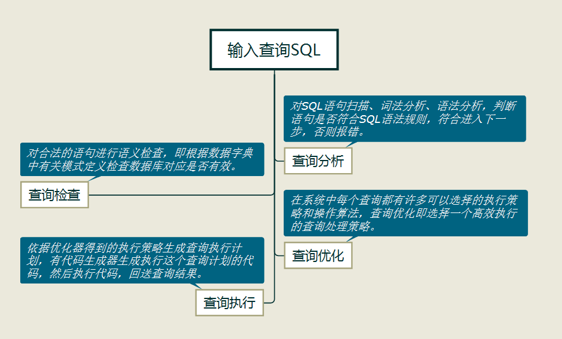
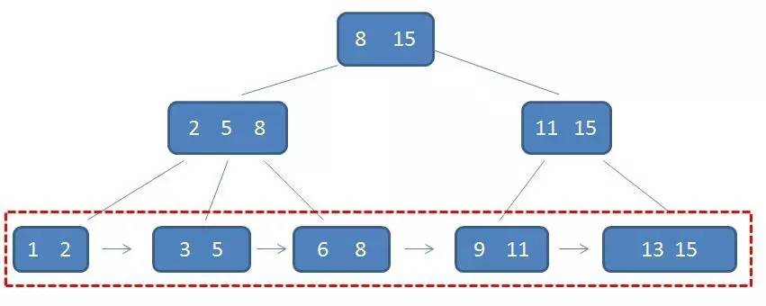
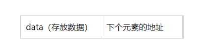
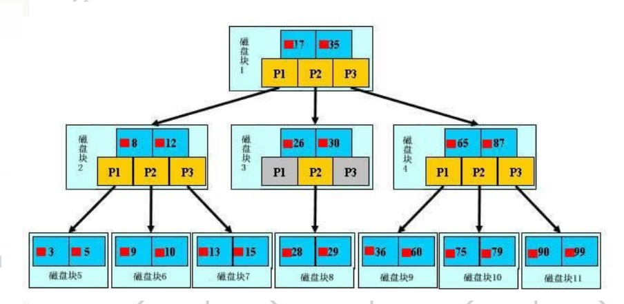

文章正式开始之前，我们来简单介绍下什么是索引，以及我们为什么会用到索引优化我们的数据库查询。
首先我们要对一个查询的基本流程简单了解，当我们输入一个SQL进行查询的时候，那么数据库管理系统（DBMS）将经过如下流程：

如上图所示，在查询优化的这一步中DBMS可以选择执行策略和操作算法，而查询算法主要分为如下两种：
1：简单的全表扫描算法。
2：索引扫描算法。
全表扫描是怎么实现的呢？笔者用一段文字描述一下这个过程。
相对靠近CPU的存储器内存的读取速度很快，但是断电擦除数据。而能持久化保存数据的存储器叫外存或者磁盘，磁盘的工作原理是磁盘旋转，磁头变换轨道读取数据，磁盘的这种纯物理操作相当耗时，而CPU对数据的处理十分快，内存的速度介于CPU和磁盘之间，但是明显大于磁盘的速度，两者不是一个量级的。相关资料显示，访问磁盘的成本大概是访问内存的十万倍，所以为了最大发挥CPU的处理能力，会将数据通过数据总线读取到内存中，集中处理。当下的主流7200转的磁盘的一次IO约占用9ms左右的时间，你可能会觉得这个时间不算长的，但是，这对于动辄十万百万甚至千万级别的数据表就是一个灾难。现假如磁盘中的一张表有10万行数据，每一行占存储空间100字节，那么这张表约占10000KB的存储空间，每次IO读取的数据我们称之为一页（page），具体一页多大的数据跟操作系统有关，一般为4K或者8K，我们按照8K来算，磁盘中的这张表如果进行全表扫描需要10000/8=1250次IO，所需时间也已经超过了10秒。
如果结果选中率不高的情况下，全表扫描算法的效率十分堪忧，如从十万条数据的表中选择一条符合要求的数据，计算机辛苦的计算了10秒钟，最后得到这一条数据，工作效率备受置疑，虽然你很辛苦。所以，针对如上的种种情况，索引便应运而生。
索引扫描算法：
索引的思想就是，根据表中的某个属性建立一套算法，每次查询的时候，在内存中根据该算法得到出所需要的数据的物理地址，根据物理地址直接去磁盘中拿到结果数据，不用将表中的所有数据都加载到内存扫描一遍。这有点类似于，我们查字典的时候，根据偏旁部首等信息对一个汉字进行页码定位（这个过程可以看做是索引的算法执行的过程），查到一个汉字的页码，根据该页码直接找到汉字所在的页，不需要把整个字典翻一遍。
索引的算法有多种（Btree树、hash、R-Tree等），所以索引也被分为了BTree索引和hash索引等种类，MySQL默认建立的索引是BTree索引，本文将重点讨论，BTree索引的实现原理。
BTree实现的数据结构是B+树，将相关数据构建成一棵B+树，通过对树的遍历，得到查询的结果，那我们就先来见见B+树长啥样。

注：该图片来自于网络，侵权删
你可能会发现子树中居然存在三个节点，对的，B+树不是二叉树，我去查了下B+树的介绍，其特征概括如下：
1、B+树不是二叉树，m阶的B+树其子树中最多分为m叉。
2、所有的叶子节点都位于同一层。
3、所有的叶子节点包含了全部的元素信息，即含有指向这些元素的的指针（也就是地址信息）。
4、叶子节点本身依靠关键字的大小从小到大顺序链接。
5、所有的中间节点只保存索引信息，不保存数据信息。（也就是说，想找到数据，必须从根节点找到叶子节点，因为真正需要的数据都在叶子节点上）
6、所有中间节点的元素都存在于子节点，在子节点元素中是最大（或最小的）元素。
现在我们去图中找找这些特征的体现：
1、首先根节点中的8是第二层左孩子中（2、5、8）中最大的数，也是第三层中（6、8）中最大的数，同样根节点中的15在其右子树中也是按照这种规律的。这样做的好处是划分了界限，具体下面会讲到。
2、所有的叶子节点形成了一个有序链表（红框中的内容），链表的构造，是将存放数据的存储单元，拆成两部分，一部分跟之前一样存放具体的数据，而新多出来的一部分用于存放指定的下个单元的地址信息，如下图：

这样很多的元素通过地址绑定起来，形成了一个链表，就像赤壁之战中将每个船只串起来的铁链（有没有很形象）。
而data中存放的数据又是有序的，所以是有序链表（将船按从小到大的顺序串联起来~）。
3、卫星数据都存放在叶子节点中，卫星数据就是指索引最终指向的数据记录，比如我们找到了数据表中的某一行，而这一行的信息的地址一定是存放在叶子节点中，那你会问，这么多的中间节点干嘛使的，中间节点存放的索引信息是为了更快捷的找到对应的叶子节点。
这么设计的作用是什么呢？
B+树的好处主要是体现在查询性能上，其中有单元素的查询和范围查询，我们依次来看一下。

单元素查询：
如上图所示，是个3阶的B+树，如果查找36，第一次IO将根节点所在的磁盘块加载到内存当中，使用二分查找法，找到指针P3，根据P3将磁盘4加载到内存中，这是第二次I0，又根据磁盘块3中的数据查找，36<65，找到指针P1，根据P1进行第三次IO，将磁盘块9加载到内存中，最终找到数据。
这种查找的方式相比较于将所有的元素进行遍历查找效率高了很多，而且算法的时间复杂度更加稳定，假设我们只找一个元素，那么所有数据进行遍历的情况，存在很大的偶然性，最好的情况第一个元素就找到了，最坏的情况在所有数据的最后一次比较中找到，所以很不稳定。
范围查找：
我们上面的查找只用到了中间节点的索引，去寻找叶子节点，既然B+维护了叶子节点的链表结构，肯定也是有作用的，，范围查找就用到了，比如我们查找3到11之间的元素，没必要每次从查找从中间节点反复游走（比如，B-树在查询范围的时候就是通过中序遍历不断的查找），此时在B+中只需要找到范围的下限，然后通过有序链表直接往下游遍历就行了。我们先通过根节点找到3所在的位置，根据3中对应的指针信息往下找直到找到11跳出。
所以B+树相对于其他树的优势有：
1、单一节点存放更多的元素（因为，中间节点不存放数据，所以节省了很多的存储空间用于存放很多用于索引的元素，这样我们查询的IO次数也就更少了）。
2、所有的查询都得找到叶子节点，查询性能稳定。
3、叶子节点中的有序链表便于范围查询。
补充内容：
那么我们在使用B+树建立索引的时候，一棵B+树最多能表示多少条数据呢？
具体来看看InnoDB一棵B+树能存放多少行 数据。答案是约2千万行。计算方式如下：
InnoDB存储引擎的最小存储单元是页（page），而在MySQL中InnoDB页的大小默认是16K，这个可以通过参数进行设置：
mysql> show variables like 'innodb_page_size';
+------------------+-------+
| Variable_name | Value |
+------------------+-------+
| innodb_page_size | 16384 |
+------------------+-------+
1 row in set (0.00 sec)
数据表中的数据都是存储在页中的，所以一个页中能存储多少行数据呢？假设一行数据的大小是1k，那么一个页可以存放16行这样的数据。
现在假设B+树的高度为2，那么树的第一层，可存储的指针是多少呢？如果我们建立索引的字段类型是bigint，即长度为8字节，而指针大小在InnoDB源码中设置为6字节，那么数据+指针共占用14字节。这里忽略了，多出来的一个指针所占用的空间，从上文中可知，一个节点中指针个数=关键字个数+1。
那么一页中可以表示多少个关键字，即16*1024/（6+8） = 1170。这是树的第一层。
第二层即为叶子节点层，而叶子节点中存储的是数据，一页中可表示的数据为16行。所以2层B+树在InnoDB引擎中可存储约1170*16=18720行数据。
同理，三层树可表示：1170*1170*16= 21902400条数据。
Tip:
B+树为何能一直保持平衡：
这跟B+树的构建与插入有关，简单概述：B+树插入的时候，会先进行查找，找到该值对应的节点， 进行插入，如果节点中的关键字不超过M-1（如果是3阶B+树的话，即不超过2），则直接插入成功，如果超过M-1，则节点进行分裂，该节点中的添加到父级节点中。以此类推。
为什么MySQL的索引要使用B+树而不是其它树形结构?比如B树？
因为B树不管叶子节点还是非叶子节点，都会保存数据，这样导致在非叶子节点中能保存的指针数量变少（有些资料也称为扇出），指针少的情况下要保存大量数据，只能增加树的高度，导致IO操作变多，查询性能变低；